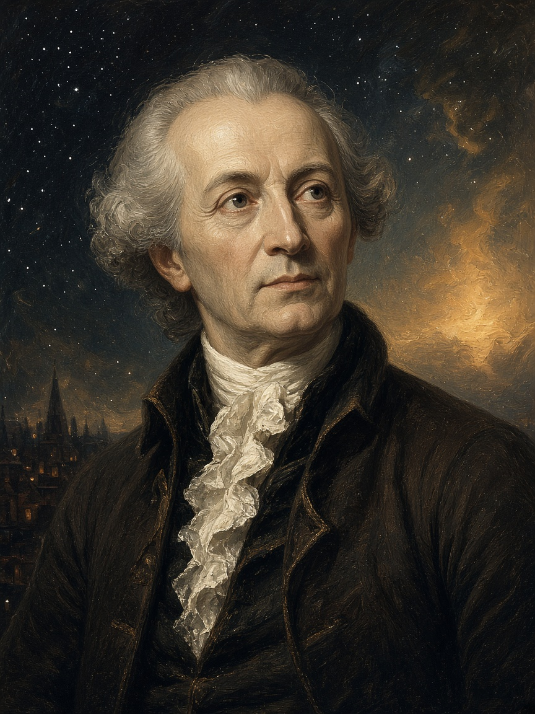

Qui non basta un elenco di parole-chiave. Serve capire perché Kant distingue i giudizi, dove mette il confine della conoscenza e come fonda il dovere. Le immagini del fumetto tornano come ancore visive.

1 · Vita, Königsberg, tre Critiche
Immanuel Kant (1724–1804) vive quasi tutta la vita a Königsberg (oggi Kaliningrad). Non è un avventuriero: è un professore che porta l’Illuminismo tedesco al massimo della rigore. La sua domanda-madre: che cosa può sapere, fare e sperare la ragione?
Le tre Critiche non sono «tre libri a caso»: sono tre tribunali della ragione.
Critica della ragion pura — che cosa possiamo conoscere? Dove finisce la scienza e inizia la speculazione vuota?
Critica della ragion pratica — come dobbiamo agire? Da dove nasce il dovere?
Critica del giudizio — come giudichiamo il bello e ciò che sembra «fatto per uno scopo»?
Ricorda così Tre Critiche = tre compiti: conoscere → agire → giudicare (puro, pratico, estetico).
2 · Rivoluzione copernicana (in filosofia)
Prima di Kant molti pensavano così: gli oggetti sono «là fuori» e la mente deve adattarsi a essi, come uno specchio. Kant ribalta l’immagine, ispirandosi a Copernico (che aveva messo il Sole al centro).
Non è (solo) la mente che si adegua agli oggetti «così come sono in sé».
Sono gli oggetti dell’esperienza che si presentano già secondo le forme della nostra facoltà di conoscere.
Forme fondamentali: spazio e tempo (intuizione) + categorie dell’intelletto (es. causa/effetto, sostanza…).
Esempio
Non «troviamo» lo spazio nel mondo come una cosa tra le cose: organizziamo ogni esperienza nello spazio e nel tempo. Senza queste lenti non ci sarebbe esperienza ordinata, ma caos di sensazioni.
Ricorda così Occhiali della mente: senza di essi non vedi; con essi vedi, ma già filtrato.
3 · Fenomeno ≠ noumeno
Da qui nasce la distinzione più famosa (e più fraintesa) di Kant.
Fenomeno
Ciò che appare a noi: l’oggetto come lo conosciamo nell’esperienza. È il campo della scienza, della fisica, della vita quotidiana ordinata.
Noumeno
La cosa in sé: ciò che la cosa sarebbe indipendentemente dal nostro modo di conoscerla. Possiamo pensarla (come limite), non conoscerla come oggetto di esperienza.
Attenzione — non è solipsismo
Kant non dice «il mondo non esiste». Dice: la conoscenza umana ha un confine. Oltre il fenomeno la ragione non ha prove da laboratorio o da esperienza.
Perché serve a scuola
Se confondi fenomeno e noumeno, pensi che Kant «distrugga la scienza». Al contrario: salvaguarda la scienza nel fenomeno e ferma le pretese di conoscere Dio, l’anima o il mondo «in sé» come se fossero oggetti tra gli oggetti.
Ricorda così Fenomeno = mappa affidabile; noumeno = territorio che la mappa non può fotografare.
4 · Giudizi: due assi da incrociare
Un giudizio collega un soggetto e un predicato («S è P»). Kant chiede due cose diverse — e vanno tenute separate:
Asse 1 · Analitico o sintetico?
Analitico: il predicato è già contenuto nel concetto del soggetto. Non aggiungi informazione nuova; chiarisci ciò che già «stava dentro».
«Il triangolo ha tre angoli» — se capisci cos’è un triangolo, i tre angoli ci sono già.
«Tutti i corpi sono estesi» — «esteso» fa parte del concetto di corpo.
«Uno scapolo è non sposato» — definizione, non scoperta.
Sintetico: il predicato aggiunge qualcosa che non era già nel soggetto. Impari (o costruisci) un contenuto nuovo.
«Questa mela è rossa» — «mela» non implica «rossa».
«Ieri ha piovuto a Königsberg» — fatto nuovo, non nascosto nella parola «ieri».
«7 + 5 = 12» — per Kant non è pura analisi della parola «sette»: unisci e ottieni un risultato nuovo.
Asse 2 · A priori o a posteriori?
A priori: indipendente dall’esperienza concreta. Vale con necessità e (di solito) universalità: non «oggi sì, domani no».
Le verità matematiche pure, per Kant, non dipendono dal contare sassi ogni volta.
«Ogni evento ha una causa» (come principio che struttura l’esperienza) non è un semplice «finora mi è andata così».
A posteriori: dipende dall’esperienza. Contingente: poteva essere altrimenti.
«Questa rosa ha spine» — lo scopri osservando.
«Kant insegnava a Königsberg» — fatto storico, non necessità logica.
L’incrocio: quattro caselle
Tabella mentale
Analitico a priori — chiarimenti di concetti (triangolo → tre angoli). Sicuro, ma non «amplia» il mondo.
Sintetico a posteriori — fatti di esperienza (mela rossa, pioggia ieri). Amplia, ma senza necessità assoluta.
Sintetico a priori — il cuore della Critica della ragion pura: amplia la conoscenza e vale con necessità (matematica; principi che rendono possibile la fisica).
Analitico a posteriori — casella quasi vuota / sospetta: se qualcosa è analitico, non hai bisogno dell’esperienza per «scoprirlo». Se ci metti un giudizio, di solito hai sbagliato etichetta.
Perché Kant insiste sul sintetico a priori?
Se tutta la conoscenza ampia venisse solo dall’esperienza (sintetica a posteriori), la scienza non avrebbe leggi necessarie. Se tutto il necessario fosse solo analitico, non spiegheremmo come la matematica e la fisica aggiungano contenuti. Il sintetico a priori è il «ponte» che Kant vuole giustificare.
Ricorda così Due domande su ogni frase: (1) aggiunge qualcosa? (2) serve l’esperienza? L’incrocio dà la casella.
5 · Imperativo categorico (etica)
In morale Kant distingue i modi in cui la ragione comanda.
Imperativo ipotetico: «Se vuoi X, allora fai Y». È un consiglio tecnico o prudenziale. Vale solo se vuoi il fine.
«Se vuoi superare l’interrogazione, studia».
«Se vuoi essere ricco, investi così».
Imperativo categorico: «Fai Y» — senza se. Non dipende da un desiderio particolare. È la forma del dovere.
Due formule da sapere
Universalizzazione: agisci solo secondo una massima che tu possa volere come legge universale (valida per tutti).
Fine in sé: tratta l’umanità (in te e negli altri) sempre anche come fine, mai solo come mezzo.
Esempio: mentire
Massima: «Mento quando mi conviene». Se diventasse legge universale, nessuno crederebbe più a nessuno: la menzogna stessa smetterebbe di funzionare. La massima si autodistrugge → non è legge morale. Non basta dire «questa volta sì» o «per un fine buono»: Kant guarda la forma della massima, non solo l’utile del momento.
Ricorda così Prima di agire: «E se tutti facessero così?» + «Sto usando qualcuno solo come strumento?»
6 · Cielo stellato e legge morale
Nella chiusa della Critica della ragion pratica Kant unisce i due poli del suo pensiero:
«Il cielo stellato sopra di me e la legge morale in me.»
Cielo stellato: grandezza del mondo sensibile, ordine cosmico che ci umilia per la nostra piccolezza fisica.
Legge morale: dignità della persona come essere libero e responsabile — non riducibile a un granello di polvere cosmica.
Non è solo poesia: è il riassunto emotivo di fenomenico (fuori) e pratico (dentro).
Ricorda così Fuori: infinito cosmico. Dentro: dovere. Due meraviglie, una sola persona.